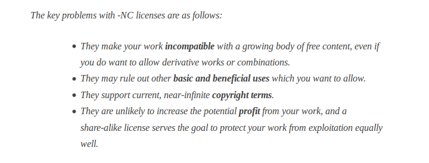

An
Intro
to
Open Data
Mita Williams, October 17th, 2014, HackWE 3.0: Windsor Public Library
What do we mean by Open Data?
“Open data is data that can be freely used, reused and redistributed by anyone – subject only, at most, to the requirement to attribute and sharealike.” Open Knowledge Foundation okfn.org
What do we mean by Open?
This is David Eaves' Three Laws of Open (Government) Data
- If it can’t be spidered or indexed, it doesn’t exist
- If it isn’t available in open and machine readable format, it can’t engage
- If a legal framework doesn’t allow it to be repurposed, it doesn’t empower
What do we mean by Open?
In other words, Open Data allows us to ...
- LOOK
- PLAY
- SHARE
Just because data is
accessable,
it doesn't mean it's
open data
What do we mean by Open Data?

If it requires Silverlight, can it been seen by all?
What if we can't
separate the data from the interface?
The 5 Stars of Open Data
The 5 Stars of Open Data
Moving from
"on the web"
to
"of the web"
Open Data from The City of Windsor
Open Data from The City of Windsor
It's the License that makes it Open
Open Licenses
CC-NC :: Creative Commons Non-Commerical
CC-NC means your publisher still makes $
CC-NC is not compatable with Open Licenses
Why Open Data in
SCIENCE
- Reproduceability
- Transparency
- Accessibility
- Releases Commercial & Social Value
- Making research visible helps teaching and learning
Science of the Web
Open Notebook Science (ONS) “is a way of doing science in which—as best as you can—you make all your research freely available to the public, and in real time.
Unlike open access (OA), ONS aims to make raw scientific data (rather than published research) freely available within hours of production, not after the months or years involved in peer review."
iPython Notebook: an exciting tool to share code and science
iPython Notebook: a new kind of textbook
Thank you for sharing this day with us
This presentation is powered by reveal.js
This presentation is cc-by